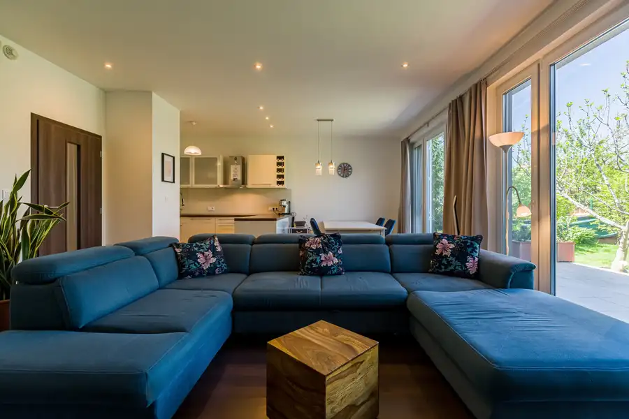
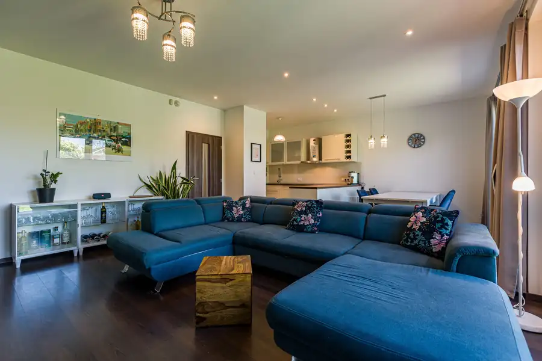
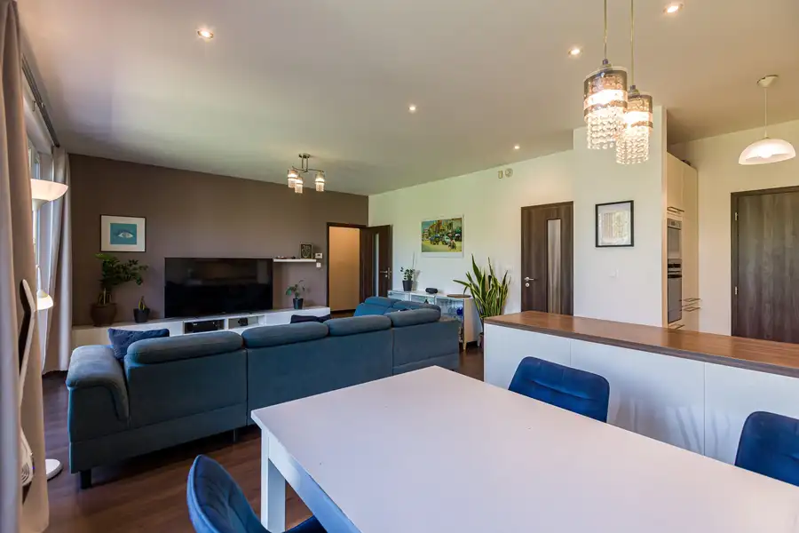
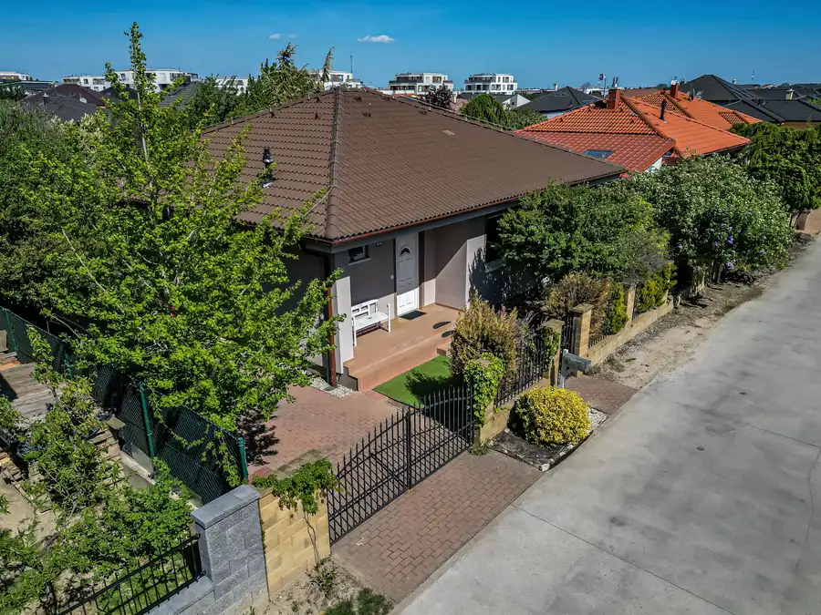
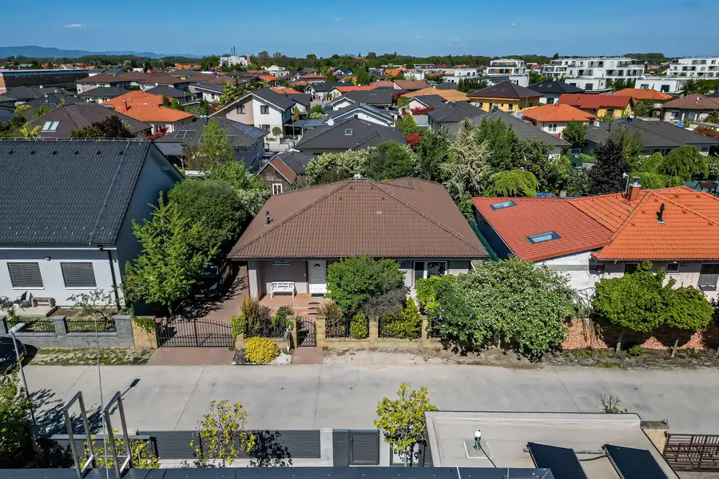
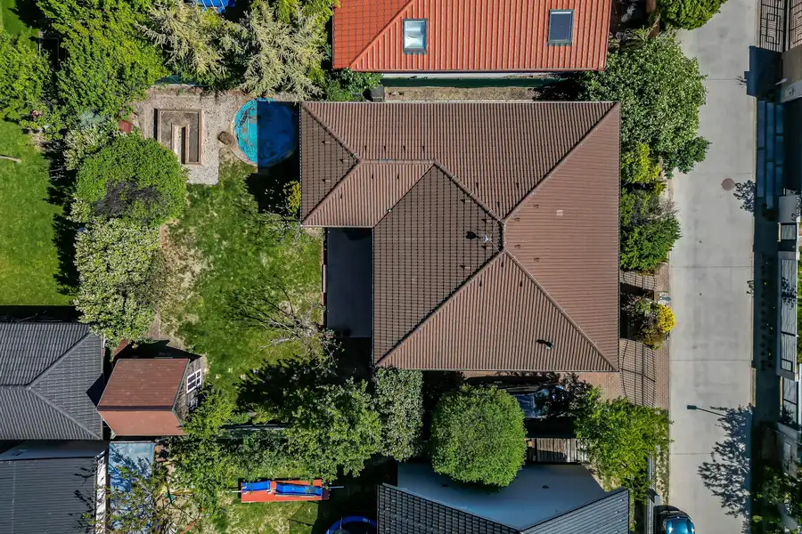
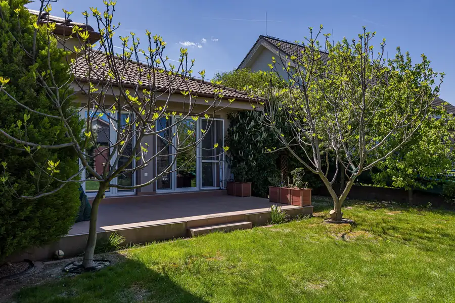
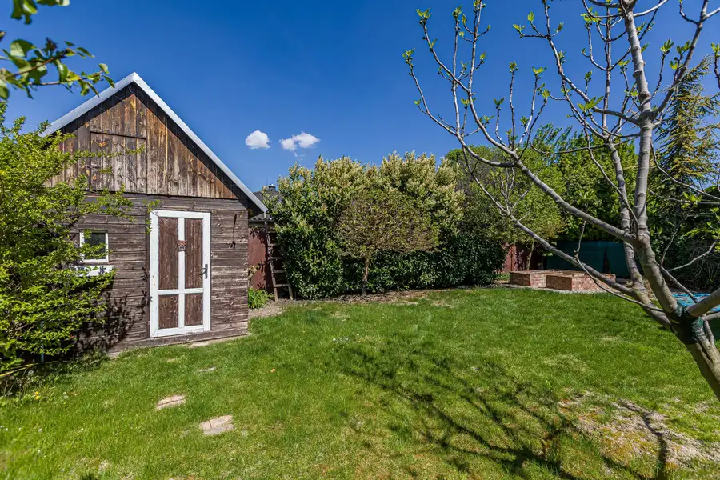

PREDAJ, 4 izbový zariadený Rodinný dom - Bungalov, Malinovo - TRI VODY
Malinovo









- Plocha104 m²
- StavNovostavba
- VlastníctvoOsobné
- Energetická triedaB
O nehnuteľnosti
Ponúkame Vám na predaj 12 ročnú novostavbu 4 izbového rodinného domu - bungalovu so záhradou Malinovo časť- TRI VODY.Úžitková plocha - 104Terasa - 21 m2Pozemok - 500 m2Zastavaná plocha pozemku - 130 m2Dom - kolaudovaný v roku 2014DISPOZÍCIA:Vstupom do rodinného domu sa dostaneme do malej vstupnej chodby, kde sa nachádza aj vstup do hosťovského WC spojeného s technickou miestnosťou. Cez chodbu sa dostaneme do dennej časti domu, kde je priestranná obývačka spojená s kuchyňou, ktorá disponuje malou špajzou a z obývačky sa presklennými dverami dostaneme na vonkajšiu terasu. Nočná časť domu má tri samostatné nepriechodné izby, kúpeľňu s vaňou aj murovaným sprchovacím kútom. Dom má podkrovie o veľkosti cca 20m2 a da sa využiť ako úložný priestor.Možnosť prepnúť vodu v celom dome na studňu/WC napájané zo studne. V každej izbe domu optika v zásuvkách. Záhradný domček s úložným priestorom na náradie a taktiež úložný priestor v podkroví domu.- zádverie - 7,49 m2- WC + technická miestnosť - 3,37 m2- chodba - 4,51 m2- kúpeľňa+ WC - 6,65 m2- izba - 12,66 m2- izba - 11,77 m2- izba - 14,74 m2- kuchyňa - 7,4 m2- komora - 1,98 m2- obývačka - 29,53 m2- šatník - 3,9 m2BENEFITY:- podlahové kúrenie - zabezpečovací systém - ALARM - vlastná studňa aj mestská prípojka na vodu- mestská kanalizácia- vlastný plynový kotol- dostatok súkromia a zelene- parkovanie dvoch áut na pozemku- úložný priestor v podkroví- 2x WCTECHNICKÉ INFORMÁCIE K DOMURodinný dom je riešený ako samostatne stojaci a jednopodlažný prízemný dom - bungalov. Rodinný dom je napojený na všetky inžinierske siete. Dom je vybavený zabudovaným domácim telefónom, televíznym rozvodom, bleskozvodom ako aj zabezpečovacím systémom. Kanalizácia je mestská + mestská prípojka na vodu + vlastná studňa.Novovybudovaná štvrť Malinovo TRI VODY je ideálna pre mladé páry a rodiny s deťmi. Tri vody Malinovo je jedinečný projekt rezidenčného bývania len 10 km od Bratislavy. Obec Malinovo ponúka kompletnú občiansku vybavenosť a infraštruktúru, školy, škôlky, obchody a služby, reštaurácie, potraviny LIDL, BILLA, COOP Jednota, kaviarne a menšie nákupné centrum medzi Malinovou a Mostom pri Bratislave. Mesačné náklady - elektrika- 70,- Eur , voda- 15,-Eur, plyn- 80,-EurCena - 399 900,-Eur je vrátane provízie pre RK, v ktorej je zabezpečený kompletný právny servis súvisiaci s predajom nehnuteľnosti. Možnosť bezplatného zabezpečenia hypotekárneho špecialistu.+421 911 122 771dobransky@dconsult.sk
Parametre
- Druh
- Rodinný dom
- Druh domu
- Bungalov
- Dátum zverejnenia
- 02. 03. 2025
- Energetický certifikát budovy
- B
- Energie
- 165
- Plocha pozemku
- 500 m²
- Počet izieb / miestností
- 4
- Počet nadzemných podlaží
- 1
- Rok kolaudácie
- 2014
- Rok výstavby
- 2014
- Stav nehnuteľnosti
- Novostavba
- Telekomunikácie
- Internet, Optická sieť
- Terás
- 1
- Terén pozemku
- Rovinatý
- Typ
- Predaj
- Typ konštrukcie
- Montovaná, Iná
- Vlastníctvo
- Osobné
- Vybavenie
- Špajza, Terasa
- Vykurovanie
- Podlahové
- Zastavaná plocha
- 130 m²
- Úžitková plocha
- 104 m²
Kde to je


Mohlo by Vás zaujímať
 BytNové
244 900 €PREDAJ, priestranný a slnečný 3 izbový byt s krásnym výhľadom na Baltskej ulici
Podunajské Biskupice, Bratislava
3-izbový72 m²10. podlažie
BytNové
244 900 €PREDAJ, priestranný a slnečný 3 izbový byt s krásnym výhľadom na Baltskej ulici
Podunajské Biskupice, Bratislava
3-izbový72 m²10. podlažie
 BytNové
399 900 €PREDAJ, Nová cena priestranného 3 izbového bytu s krásnym výhľadom s lodžiou a balkónom na Matejkovej ulici
Karlova Ves, Bratislava
3-izbový106.73 m²4. podlažie
BytNové
399 900 €PREDAJ, Nová cena priestranného 3 izbového bytu s krásnym výhľadom s lodžiou a balkónom na Matejkovej ulici
Karlova Ves, Bratislava
3-izbový106.73 m²4. podlažie
 BytNové
350 000 €PREDAJ, Nová cena krásneho a slnečného 3 izbového bytu na Križkovej ulici v Starom Meste
Staré Mesto, Bratislava
3-izbový80.9 m²4. podlažie
BytNové
350 000 €PREDAJ, Nová cena krásneho a slnečného 3 izbového bytu na Križkovej ulici v Starom Meste
Staré Mesto, Bratislava
3-izbový80.9 m²4. podlažie